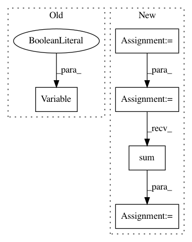

614c41e7f05d274991d95271c49a87af3fa2cf49,onmt/Loss.py,NMTLossCompute,compute_loss,#NMTLossCompute#Any#Any#Any#,150
Before Change
if self.label_smoothing > 0:
mask = target_feed.unsqueeze(1).eq(self.padding_idx) \
.repeat(1, scores.size(1))
target_ = Variable(self.one_hot.repeat(target_feed.size(0), 1),
requires_grad=False)
target_.scatter_(1, target_feed.unsqueeze(1),
1 - self.label_smoothing)
target_.masked_fill_(mask, 0)
target_feed = target_
After Change
gtruth = target.view(-1)
if self.confidence < 1:
tdata = gtruth.data
mask = torch.nonzero(tdata.eq(self.padding_idx)).squeeze()
likelihood = torch.gather(scores.data, 1, tdata.unsqueeze(1))
tmp_ = self.one_hot.repeat(gtruth.size(0), 1)
tmp_.scatter_(1, tdata.unsqueeze(1), self.confidence)
if mask.dim() > 0:
likelihood.index_fill_(0, mask, 0)
tmp_.index_fill_(0, mask, 0)
gtruth = Variable(tmp_, requires_grad=False)
loss = self.criterion(scores, gtruth)
if self.confidence < 1:
loss_data = - likelihood.sum(0)
else:
loss_data = loss.data.clone()
stats = self.stats(loss_data, scores.data, target.view(-1).data)
In pattern: SUPERPATTERN
Frequency: 3
Non-data size: 5
Instances
Project Name: OpenNMT/OpenNMT-py
Commit Name: 614c41e7f05d274991d95271c49a87af3fa2cf49
Time: 2017-12-22
Author: skywalker@postech.edu
File Name: onmt/Loss.py
Class Name: NMTLossCompute
Method Name: compute_loss
Project Name: pytorch/tutorials
Commit Name: 0ad33d606682537466f3430fc6d6ac7d47460f1a
Time: 2018-04-24
Author: soumith@gmail.com
File Name: beginner_source/blitz/autograd_tutorial.py
Class Name:
Method Name:
Project Name: pytorch/tutorials
Commit Name: 0ad33d606682537466f3430fc6d6ac7d47460f1a
Time: 2018-04-24
Author: soumith@gmail.com
File Name: beginner_source/former_torchies/autograd_tutorial.py
Class Name:
Method Name: